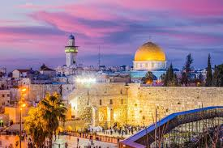

Jerusalem

Jerusalem is one of the most significant cities in the world, home to important religious and historical sites. Our tours include walks through the Old City, holy places, and traditional markets.
Tour Highlights
- Old City Walking tour
- Visits to key religious sites
(like Al-Aqsa Mosque and Church of the Holy Sepulchre) - Free time in local markets